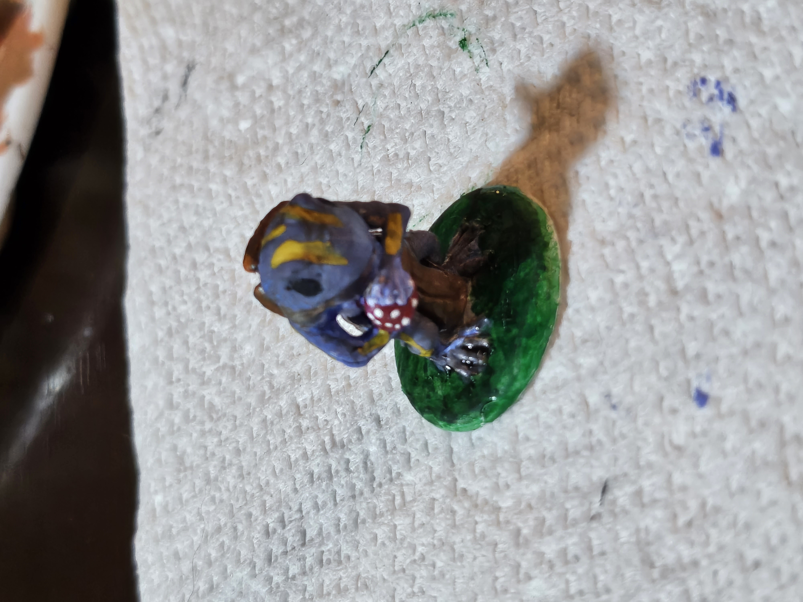

About Me
My Academic Career
I first started taking college courses in my junior year of highschool, attending JFK middle college and taking classes at Norco college.
After graduating highschool in 2018, I stayed at Norco for another two years before being admitted to Cal State San Bernadino. I've been attending classes at CSUSB for about
three years, and I should be set to graduate by the end of this year, after the Fall semester. As a computer science major, my biggest struggle has been writing intensive courses
as I am not a good writer when it comes to essays, but I love learning and writing code.
My Hobbies
I have a lot of hobbies, really whatever I can fill my time with, but the most prolific being 3D printing, painting, and playing Dungeons and Dragons. All three of those
fit together very well, I print miniatures and paint them to play DND with. 3D printing has a lot of advantages, especially when you can use both Resin and FDM printing. Aside
from printing miniatures, I can print a lot of house holds needs, like a wall mount for a console my roommate keeps downstairs in order to keep it away from our cats. Playing DND
gives me a lot of time with my friends and helps develop teamwork skills as well as forces us to think critically about various problems. I started painting because of my other hobbies
and I discovered how much fun it can be. There is a lot of joy to be found when focusing on very minute details. My personal favorite is pictured below.

Work
In an effort to pay rent and live on my own while attending college courses, I work at Reunion Kitchen in Corona as a bartender. This is my third resturant job and by far
my best. Reunion gives bartenders a lot of freedom, including letting us come up with our own drinks. I've been interested in mixology for several years now, and have invented
multiple cocktails. At Reunion, as part of the menu, we have a drink listed as 'Trust Us', which is basically dealers choice, after asking a few questions to understand my
customers palette, I like to come up with a drink on the spot, using an assortment of spirits, fresh fruits, and liquours, assuming I have the time for it.
My Github